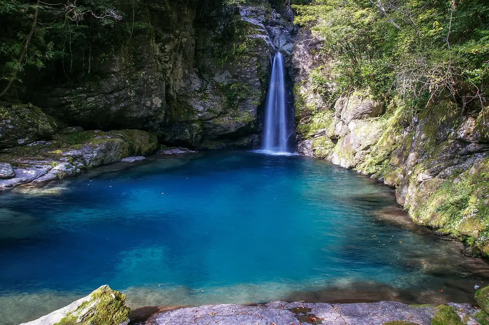
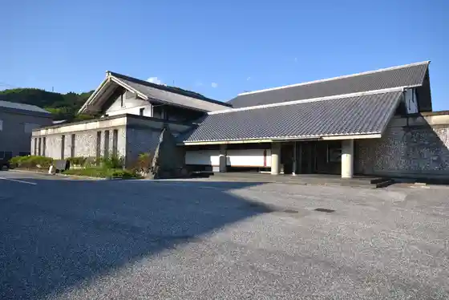
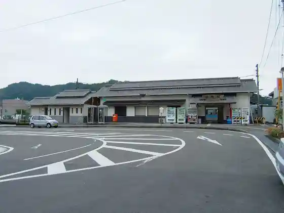
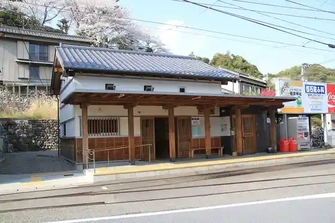

Ino
Ino · Kochi
Ino
Highlighted on the Kochi map.

Stay
Kame no I Hotel Kochi
VILLA MOITOS NIYODO
Saka no Ue no Ie / Minpaku
Tosa Washi Kogei Village (Kuraudo)
Casolare Verde Blu
Dining
Machikado Shokudo Harahachi
Oishimbo Yamaoka
Niyodo Ya Nishi no Tani Mise
Aoineko
Yama to Kawa
Hakobe Ino Mise
Sanpo Michi
Teuchi Soba Toki Ya
Hatakeyama Garden
Kafe Sora
Soan
Shirasa
Kochi Aisu Baiten
Erupio
Cafe Niyodo Buru
OAK Bakery
Experience
Roadside Station Tosa Washi Kogei Village
Sights
Niko Fuchi
Ino Kami no Museum

Ino Eki

Nagoya Ya Chinkakyo
Ino Teiryujo

Kami no Ko Ino Bori